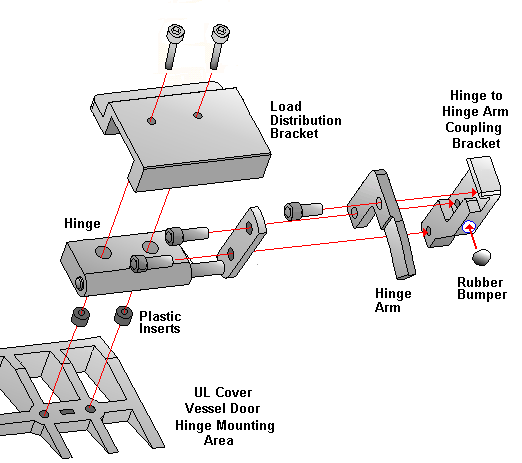
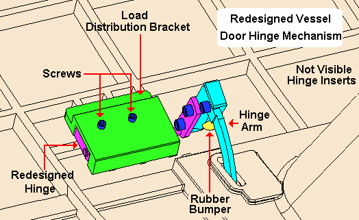
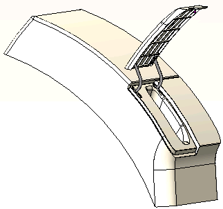
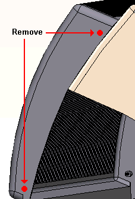
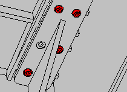

This procedure describes how to remove and replace the upper left main cover. The upper left main cover is normally replaced only because of failure of the imbedded metal inserts that are used to attach the vessel load door to the cover.
Required Materials
Upper left cover kit (upper left cover with pre-assembled vessel load door)
Two part kits are available for the upper left (UL) cover area. Refer to the parts list for part numbers.
Upper left cover kit (upper left cover with pre-assembled vessel load door)
Vessel load door kit (vessel load door, redesigned hinges, hinge extension arms, rubber bumpers, force distribution bracket, inserts, and screws)
Note: The upper left cover kit does not include the hinge arms for the main upper left cover or the dark gray vented portion of the cover. Reuse the original parts on the instrument.
Perform this procedure when the upper left cover is damaged.
The upper left cover:
is replaced normally only because of failure of the imbedded metal inserts used to attach the vessel load door to the cover. The inserts pull out of the cover.
is preassembled in manufacturing, and only requires the removal of the two large hinge arms and the vented rear cover from the original cover.
Figure 30: Revised door hinge (exploded view)

Figure 31: Revised door hinge (assembled view)

Figure 32: Upper left cover assembly

Prepare for replacement.
Remove the upper left cover from the box.
Inspect the cover for damage, and ensure that the inside surface of the cover does not contain any debris.
Turn off the power to the instrument motors by turning off the power distribution PCB switch.
The power distribution PCB switch is labeled All DC Power (except CPU and reagent coolers).
Cover the reaction vessels in the bulk vessel feeder.
Covering the vessels prevents:
Contamination of the vessels.
Hardware from falling into the vessels or hopper, if the hardware is dropped.
Remove the damaged upper left cover from the instrument.
Warning: It takes two people to remove and replace the damaged cover safely. To avoid injury arrange for assistance, before attempting to remove or replace the cover.
Open the upper right cover.
Open the upper left cover.
Locate and remove the screws (two on each end) that attach the dark gray vented cover to the main upper left cover (four 3/32-in screws).
The vented cover does not fall, even with the screws removed.

Loosen all the screws that attach the upper left cover to the main hinge arms (eight 9/64-in hex screws).

Remove three of the four screws holding each hinge arm to the cover.
Have the assistant hold the front edge of the cover, and then remove the remaining two screws.
Grasp the rear of the main cover, and lift the cover upward and sideways, lifting it out of the way.
Discuss with the customer how to dispose of the cover.
Install the upper left cover.
Warning: It takes two people to remove and replace the damaged cover safely. To avoid injury arrange for assistance, before attempting to remove or replace the cover.
Lift the cover onto the instrument with the assistant lifting and holding the front of the cover in position.
Install one screw through the left hinge arm and into the cover (one 9/64-in hex screw). Do not completely tighten the screw.
Install one screw through the right hinge arm and into the cover. Do not completely tighten the screw.
Note: Now, the cover remains positioned safely without the assistant holding it.
Loosely install the remaining six screws into the cover.
Tighten all eight screws, but do not overtighten. Do not strip the plastic cover threads.
Lift the vented rear cover into position over the hinge arms and install the mounting screws (four 3/32-in hex screws).
Inspect the vessel door for correct operation and fit.
The vessel door hinge arms should not contact the cover slots through which they pass.
The cover should sit without one side higher than the other.
The vessel door edges should be nearly parallel to the upper left cover edge lines.
Note: If the door does not operate or fit correctly, contact Technical Support.
Power on the instrument motors by turning on the power distribution PCB switch.
Verify that opening and closing the upper left cover activates and deactivates the interlock switch.